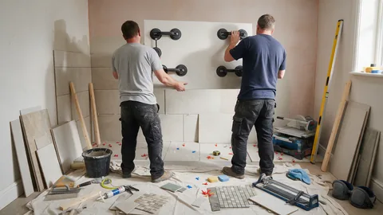

Advice
Three things worth knowing.
Written for this demo from general trade knowledge. They are the three conversations that happen in nearly every bathroom doorway with somebody pointing at a wall, so they may as well be here where you can read them without a tiler stood next to you.
The three
Read before you ring anybody.
 Generated photo
Generated photoTiling over tiles: when it is fine and when it is not
Three checks that take ten minutes and tell you whether the old tile can stay. And the thing nobody mentions, which is what the extra thickness does to your door.
 Generated photo
Generated photoGrout going black: what it actually means
Usually it is growing on the surface and comes off. Sometimes it is telling you water is getting behind the tile. How to tell which one you have.

Generated photoLarge format tiles: what to know first
Fewer joints, more preparation. Why the quote for a one metre tile is not the same as the quote for a small one, and what you are actually paying for.
Rather just ask somebody?
The chat box answers the same questions, or get a quote and we will come and look at the actual wall.